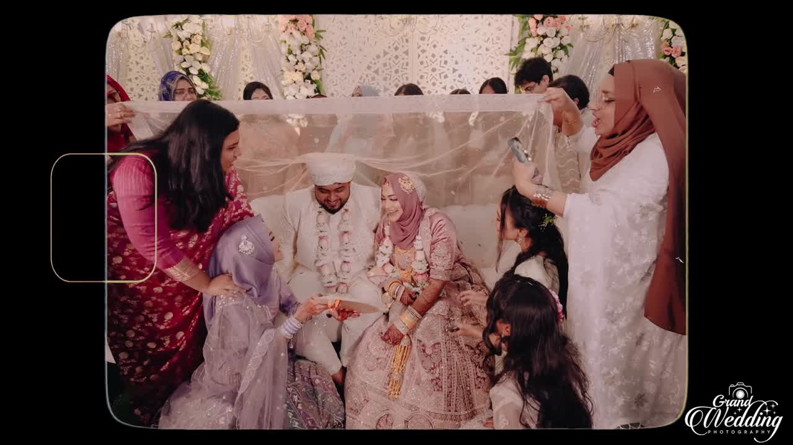

Cinematic Wedding Films
Movement keeps what a still frame cannot.
Two supplied films are presented here with poster-first loading. The video file itself is requested only after you press play.
Film 01
A story in motion.
A wide cinematic presentation for the main wedding film.
Film 02
Short, vertical, immediate.
A reel-sized edit for the moments that work best in a tighter, faster format.
“
The photographs bring back the look. Film brings back the pace, the voices and the room.
Grand Wedding Photography